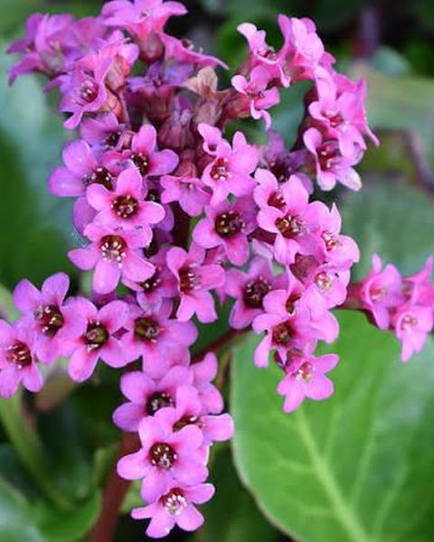

Компонент 01 / 26
Кореневище бадану
Bergenia crassifoliaМістить таніни, галову кислоту, арбутин, катехіни, флавоноїди, кумарини, дубільні речовини, глікозид бербегін. Бадан відомий як рослина-адаптоген, що підвищує загальну опірність організму, має протизапальні, антисептичні, в'яжучі, кровоспинні та бактерицидні властивості.